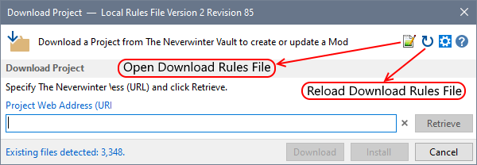

If you want to provide feedback or contribute to the Download Rules, visit the Project Download Rules for the Installer Tool (NIT) topic, use the Help menu's Send Feedback option or click here.
You can write and test your own Download Rule before submitting the rule for inclusion in the published rule file.
Additional options are shown on the Project Download dialogue after performing these steps.

Each time the Installer Tool is started, it downloads the rules from the web, which allows rule updates to be published without having to release a new version of NIT. This means that any changes you make to the local copy of the rules will be lost the next time you start the Installer Tool.
You can avoid this problem by defining your new or edited rule in the User Rules file, which is automatically opened when you Open Download Rules File (see View Download Rules). Once you are satisfied with the rule, you should copy and paste the new or edited rule to the Project Download Rules for the Installer Tool (NIT) topic so it can be included in the community version of the rules file.